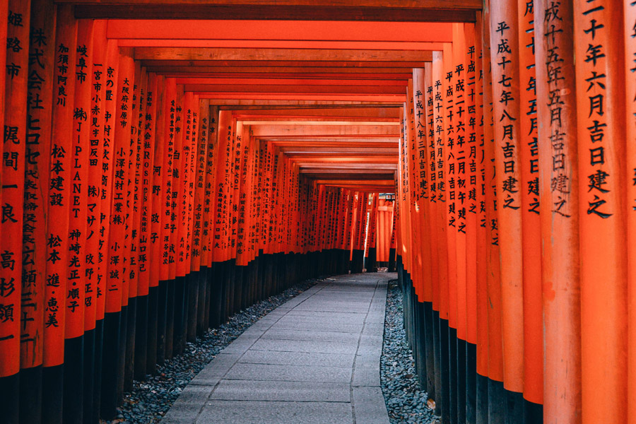
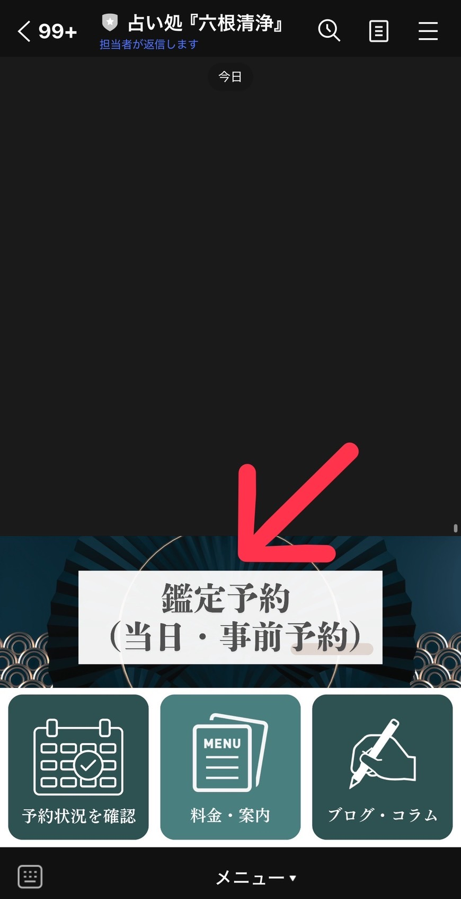
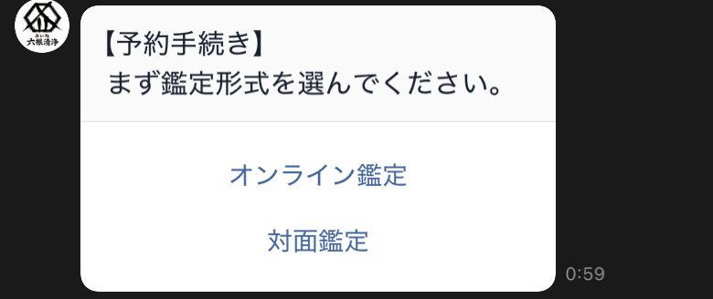
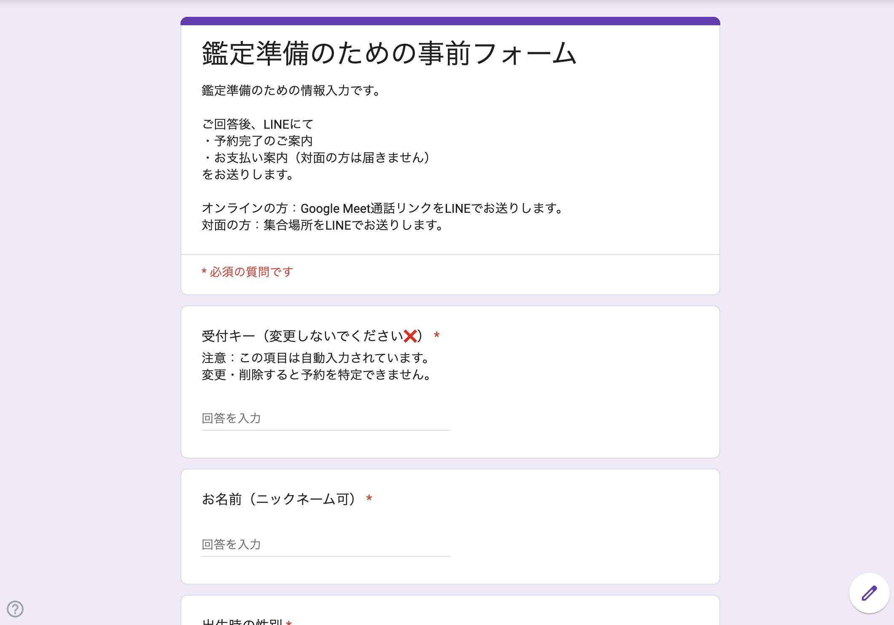

LINEを使わない方は フォームで予約 もできます
好きな人の本音がわからない。復縁したいけれど、連絡していいのか迷っている。
アプリで会う相手を選びきれない。この人と進めていいのか、確信が持てない。
転職すべきか、今の場所で続けるべきか。自分に向いている働き方が知りたい。
家族との関係がしんどい。引越しや決断のタイミングを見極めたい。
六つの占術で多角的に読み解き、
「で、どうすればいいか」まで一緒に考えます。

仏教用語で「六つの感覚を清める」
「心のノイズを消し本質を見る」
という意味。
現在はオンライン・対面鑑定を中心に活動中。
（対面は名古屋・栄周辺）
※東枇杷島に事務所準備中です。
四柱推命・紫微斗数・易
九星気学・タロット・オーラ視
という六つの占術を使って。
いろんな角度から見ることで、
相手の本音を読み解き、
あなたの迷いを晴らし、
進む道を照らします。
LINEで完結。シンプルで簡単な予約プロセス。



「彼、今運気落ちてるから◯月以降にこういう内容で連絡して」って超具体的で。言われた通りにしたら長文返信きて泣きました。今は復縁して同棲してます。
私が素質的に苦手なことを無理に頑張ってたことが分かりました。向いてる分野を教えてもらって転職活動したら、すぐ内定もらえて。
「今年は縁がない年。来年の春から動いて」って。言われた通りにしたら3人目で今の彼に出会えて、しかも言われてた特徴そのままの人。